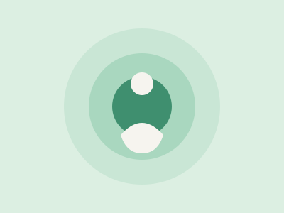
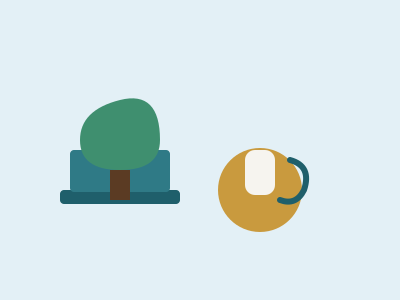
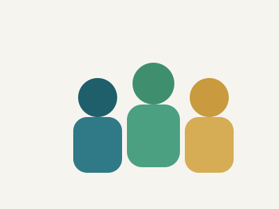
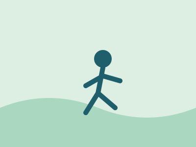
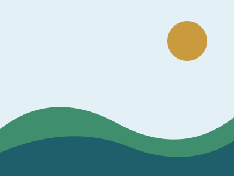
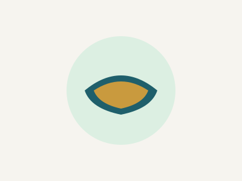
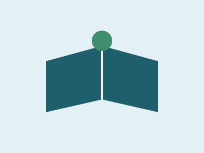
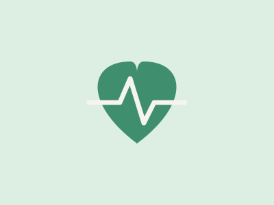

Mente Viva
Mente Viva
Início / Galeria
Galeria
Ilustrações originais, criadas para este projeto, representando temas ligados ao bem-estar.








Início / Galeria
Ilustrações originais, criadas para este projeto, representando temas ligados ao bem-estar.







